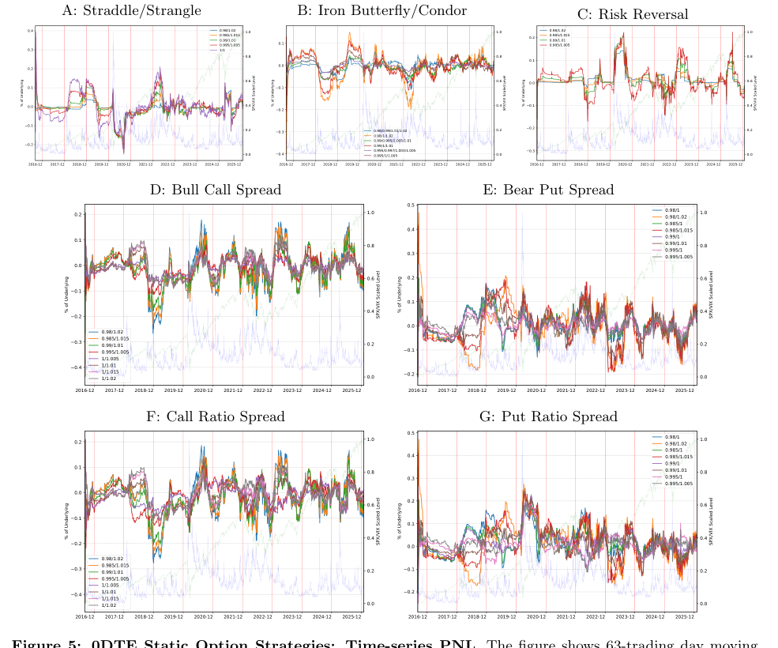

บท 0006: ต้นทุนและ tail risk คือด่านจริงของ 0DTE
Table 3-4 คือจุดที่ paper เปลี่ยนจาก backtest สวย ๆ เป็นคำถามว่า implement ได้จริงไหม
1. Mid price คือ benchmark ไม่ใช่ชีวิตจริง
mid price คือราคากลางระหว่าง bid กับ ask ถ้า bid = 3.8 และ ask = 4.2 mid = 4.0
แต่ถ้าคุณซื้อจริง คุณมักซื้อใกล้ ask. ถ้าขายจริง คุณมักขายใกล้ bid. paper จึงเพิ่ม scenario ที่หัก half-spread ต่อ leg
2. หลาย legs แปลว่าหลายครั้งที่เสีย spread
single option มีหนึ่ง leg แต่ iron condor อาจมี 4 legs. ถ้าทุก leg เสีย spread ต้นทุนรวมของ strategy หลายขาจะกิน edge ได้เร็วมาก
paper จึงดูทั้ง mid, bid/ask, และ bid/ask + 0.5bp slippage/fees
3. อ่าน Table 3
Table 3 บอกว่าเมื่อย้ายจาก mid ไปสู่ implementable execution ค่าเฉลี่ยและ Sharpe หลาย strategies แย่ลง
ตัวอย่างจาก table: put ratio spread ยังดูดีที่สุดในกลุ่ม unconditional หลัง B/A+0.5bp โดย mean ประมาณ 0.0115% ของ underlying และ Sharpe 0.49 แต่ก็ยังต้องเทียบกับ ES1% ประมาณ 0.8228%
แปลแบบคน: ค่าเฉลี่ยบวกเล็ก ๆ แต่วันที่แย่มากใหญ่กว่าค่าเฉลี่ยรายวันหลายสิบเท่า
4. ES1% คืออะไร
ES1% คือการดูหางซ้ายที่แย่ที่สุดประมาณ 1% แล้วถามว่าในกลุ่มวันแย่สุดนั้น ขาดทุนเฉลี่ยหนักแค่ไหน
มันสำคัญกว่า worst day ตัวเดียว เพราะไม่ได้ดู outlier หนึ่งวัน แต่ดูบริเวณ tail ทั้งกลุ่ม
5. อ่าน Table 4
Table 4 รายงาน skewness, ES1%, max drawdown, worst day, worst 5-day loss และ loss probability
ถ้า strategy mean บวกแต่ ES1%, worst-day loss และ max drawdown ใหญ่ นั่นหมายความว่า strategy ต้องการ capital/risk governance ที่จริงจัง ไม่ใช่แค่ดูว่า average เป็นบวก

6. สรุปบทนี้
7. Retrieval
ทำไม mid-price result อาจดูดีเกินจริง?
เพราะ mid ไม่รวมต้นทุน execution จริงจาก bid/ask spread และ slippage
ทำไม multi-leg strategy เสีย friction มากกว่า option เดี่ยว?
เพราะแต่ละ leg มี bid/ask spread ของตัวเอง ต้นทุนจึงสะสมตามจำนวน legs
ES1% ช่วยเห็นอะไรที่ mean PNL ไม่เห็น?
ช่วยเห็นขนาด loss ในกลุ่มวันที่แย่ที่สุด ซึ่งเป็นหัวใจของ risk ใน 0DTE